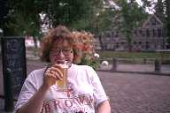

Utterly irrelevant pictures
On this page you'll find some utterly irrelevant pictures in full
color. Click on the 128*192 thumbnails to see the larger 512*768
versions.
Me, myself, and I...
These pictures are of me... Be warned!
- Posing as a rough sailor. Don't believe it, I already get seasick when
taking a shower.
- Working out, that is, carrying a serious amount of beer.
- I still can't believe I really ate this trash. I was sick for three days,
to the extent that I was in doubt which end of my body I should
aim at the toilet first...
She!
These pictures are of Tieleke
Stibbe, my wife. Ain't she cute?

- Tieleke wearing
the Love at first sight shirt I bought her.
It really was; and I don't even believe in such crap.
- Tieleke
drinking a Valkenburgs Wit beer at Babbels,
our favorite summer hangout in Leiden, The Netherlands. The shirt
she's wearing was a gift from a friend, neither she nor I has ever
studied at Brown.
They.
This picture is of some former colleagues.
- From left to right: Jan van Hartevelt, Erik Kruyt, and Gerard Borsboom.
They're the ones really in charge of the ship.
All wearing sunglasses because they don't want to be recognized
(they don't have their own home page yet, and are ashamed of it).
By the way...
These pictures were taken in the summer of 1992 near Leiden, The
Netherlands and Wiltz, Luxemburg.
Jan Joris Vereijken / janjoris@acm.org